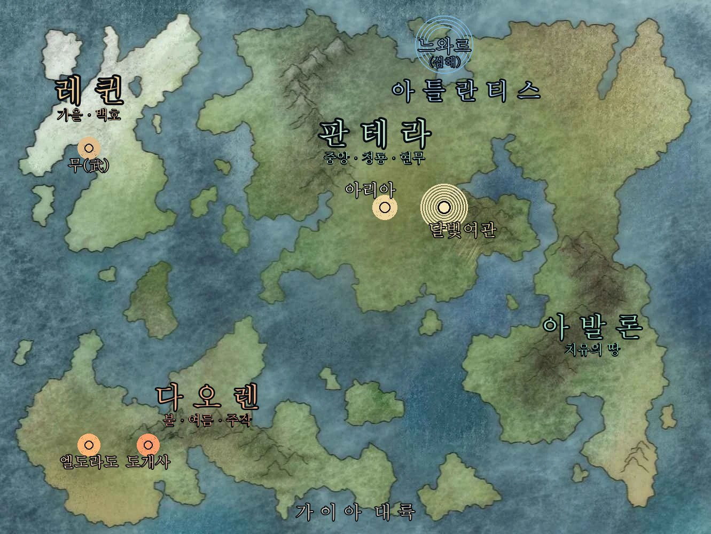

| 도시 | 한 줄 | 이런 분께 |
|---|---|---|
| 아리아 | 유일한 현대 도시. 중앙의 심장 | 규칙과 자격의 세계 |
| 아발론 | 치유의 땅 | 살리고 돌보는 쪽 |
| 느와르 | 빛이 닿지 않는 심해. 계약의 도시 | 거래와 비밀 |
| 다오렌 | 불과 여름. 시장과 예술 | 사고팔고 만드는 쪽 |
| 레퀸 | 가을과 무(武) | 강해지려는 쪽 |
| 육신세계 | 우리가 한 번 살았던 곳 | 인간 · 사냥터 |
🏛 아리아 — 현대 도시
유일하게 21세기가 흐르는 도시.
다른 대륙이 아직 설화의 시간을 사는 동안, 아리아만은 현대입니다.
전깃불, 유리로 된 탑, 포장된 도로.
아리아가 속한 판테라는 영물이 가장 많이 사는 대륙입니다.
북쪽은 음기가 강하고 동쪽엔 봄 기운이 흐르며, 중부로 갈수록 기술이 발달합니다.
| 구역 | 내용 |
|---|---|
| 프람 타워 | 중앙의 본부. 자격 등록 · 임무 발주 · 법기 제작 의뢰가 모두 여기서 이뤄집니다 |
| 구 프람 폐허 지구 | 버려진 반기계 실험체가 배회하는 무법지대. 역설적으로 기술이 가장 발달한 곳입니다 |
| 숲 | 그 안에 달빛여관이 있습니다 |
여기 오는 이유 — 자격을 얻으려면, 임무를 받으려면, 법기를 손보려면 결국 아리아로 와야 합니다.
🌿 아발론 — 치유의 땅
영물세계의 유일한 치유의 땅.
청룡은 회복 술식의 원조이고, 그 본산이 이곳입니다.
짓지 않고 키웁니다. 나무와 덩굴을 자라게 해 형태를 만듭니다.
도시는 해마다 조금씩 모양이 바뀝니다. 아발론의 지도는 오래가지 못합니다.
사계절이 동시에 존재합니다. 회복 술식이 계절을 붙들어두기에 구역마다 계절이 다릅니다.
봄의 거리를 지나면 가을의 거리가 나옵니다.
| 구역 | 내용 |
|---|---|
| 시원목(始原木) | 도시 중앙의 거대한 나무. 이 나무가 죽으면 도시도 죽습니다 |
| 회생원(回生院) | 치료의 중심. 침식 병동 · 기억 병동 |
| 등용문(登龍門) | 잉어 가문의 폭포. 오르는 자만이 인정받습니다 |
| 묘원(苗園) | 약초 계단밭이자 무명 보호구역 |
문화 — 빚(恩)
회생원은 값을 받지 않습니다. 대신 빚을 기록합니다.
돈이 아니라 행위로 갚아야 합니다.
책을 붙드는 곳 — 복원은 불가능하지만, 더 닳지 않게 붙들 수는 있습니다.
인간 계승자가 아발론을 찾는 이유입니다.
중앙과 마찰하는 이유
- 회생원은 요괴도 치료합니다
- 무명에게 이야기를 붙여주는 것은 부활과 무엇이 다른가?
달빛여관이 싸움을 금지하는 중립이라면, 아발론은 치료를 거부하지 않는 중립입니다.
여기 오는 이유 — 살리기 위해. 혹은 살기 위해.
🌊 느와르 — 심해의 도시
빛이 닿지 않는 곳에 지어진 도시.
아틀란티스는 현무의 땅으로, 음기가 가득하고 해저도시와 수상도시가 겹쳐 있습니다.
그 수도가 느와르 — 수정 돔과 산호벽, 심해석으로 지어졌습니다.
낮과 밤이 완전히 다릅니다
| 낮 | 푸른빛. 조용합니다 |
| 밤 | 붉은빛. 만해지의 문이 열리고 암거래가 살아납니다 |
| 구역 | 내용 |
|---|---|
| 칠흑궁 | 수장의 거처. 영의 연못 · 봉인 감옥 · 계약의 홀 |
| 흘러내린 구역 | 주거지. 해파리 정원 · 고래등 수산시장 · 흑류 선착장 |
| 만해지 | 요괴 자율구역. 요괴법 5조로 운영됩니다 |
| 흑진주 도서관 | 물방울 문서를 '체험'하는 곳 |
| 해기술 실험동 | 심해 기술 연구소 |
| 음지 구역 | 800년 전 집단 변천 사건이 일어난 곳. 출입 금지 |
봉인 감옥 — 제7감방(인어의 노래) / 제13감방(800년 전의 유일한 생존자가 스스로 들어갔습니다) / 최심층(형태가 없는 것)
⭐ 계약의 홀
인간이 이 세계로 들어오는 정식 관문입니다.
| 규칙 | 내용 |
|---|---|
| 자유의지 | 반드시 필요합니다. 강요된 계약은 성립하지 않습니다 |
| 이행하면 | 혼이 돌아옵니다 |
| 이행하지 못하면 | 이야기 조각이 영구히 귀속됩니다 |
| 혼을 잃으면 | 술식이 약해지고 기억이 흐려집니다. 심해지면 무명이 됩니다 |
여기 오는 이유 — 계약하러. 혹은 어디서도 구할 수 없는 것을 구하러.
🔥 다오렌 — 불과 여름의 대륙
양기가 너무 강해, 요괴가 힘을 쓰지 못하는 땅.
남쪽 대륙이며 주작의 영향권입니다. 사막과 활화산과 붉은 초원이 함께 있습니다.
요괴에게 가장 위험한 땅이라는 건 — 영물에게 가장 안전한 땅이라는 뜻이기도 합니다.
| 구역 | 내용 |
|---|---|
| 엘도라도 | 주작의 도시. 본섬은 최고 60도, 부속 섬들은 휴양지입니다 |
| 도개사 | 영물세계 최대 무역시장. 겉의 시장(합법)과 속의 시장(암거래)이 겹쳐 있습니다 |
| 염화가 | 예술·패션 구역. 화풍연의상단이 운영하며 연의 4계열(홍염·사화·연정·귀화)로 나뉩니다 |
염화가 세부 — 연의로(대로·축제) / 백염정(온천·향·귀족) / 흑화로(밤의 암거래 · 각인술 · 검붉은 장미 문양)
⭐ 흑화로 — 금기 계약의 각인술이 이뤄지는 곳이자,
무명의 고기가 최고가에 거래되는 곳입니다.
여기 오는 이유 — 사고팔기 위해. 합법이든, 아니든.
🍂 레퀸 — 가을과 무(武)의 대륙
축복받은 땅. 그리고 싸움으로 말하는 땅.
서쪽 대륙이며 백호의 영향권입니다. 가을 기운이 흐르고 수확이 풍요로우며 철과 은이 넘칩니다.
다만 북쪽으로 갈수록 음기가 강해집니다.
| 구역 | 내용 |
|---|---|
| 무(武) | 주요 도시. 천호산 산기슭. 무공과 상공업의 중심 |
| 몰운령 | 안개가 걷히지 않는 산맥 |
| 한백야 | 얼어붙은 평원 |
| 단애 | 최북단의 절벽 |
문화
- 일구음주종투(一口飮酒終鬪) — 설화주를 검은 잔에 따라 건네면 생사결 신청입니다. 받아 마시면 성립합니다
- 전사의 무구를 으뜸 유품으로 칩니다 — 무엇을 남겼는가로 그 사람을 기억합니다
⭐ 법기 계승의 본고장
유품을 가장 귀하게 치기에, 법기를 물려주고 물려받는 전통이 가장 깊습니다.
그래서 책의 허락을 구하는 의례도 이곳이 가장 엄격합니다.
레퀸에서는 허락 없이 법기를 쥐는 것을 살인보다 부끄럽게 여깁니다.
여기 오는 이유 — 강해지기 위해. 혹은 물려받기 위해.
🏙 육신세계 — 인간들의 세계
우리가 한 번 살았던 곳.
신령이 관리합니다. 영물들이 이야기를 남기고 온 곳이기도 하죠.
- 요괴가 넘어가 인간의 이야기를 먹습니다 → 그래서 사냥터가 됩니다
- 인간 계약자들이 태어나는 곳입니다
여기 오는 이유 — 사냥 임무. 혹은 두고 온 것을 보러.